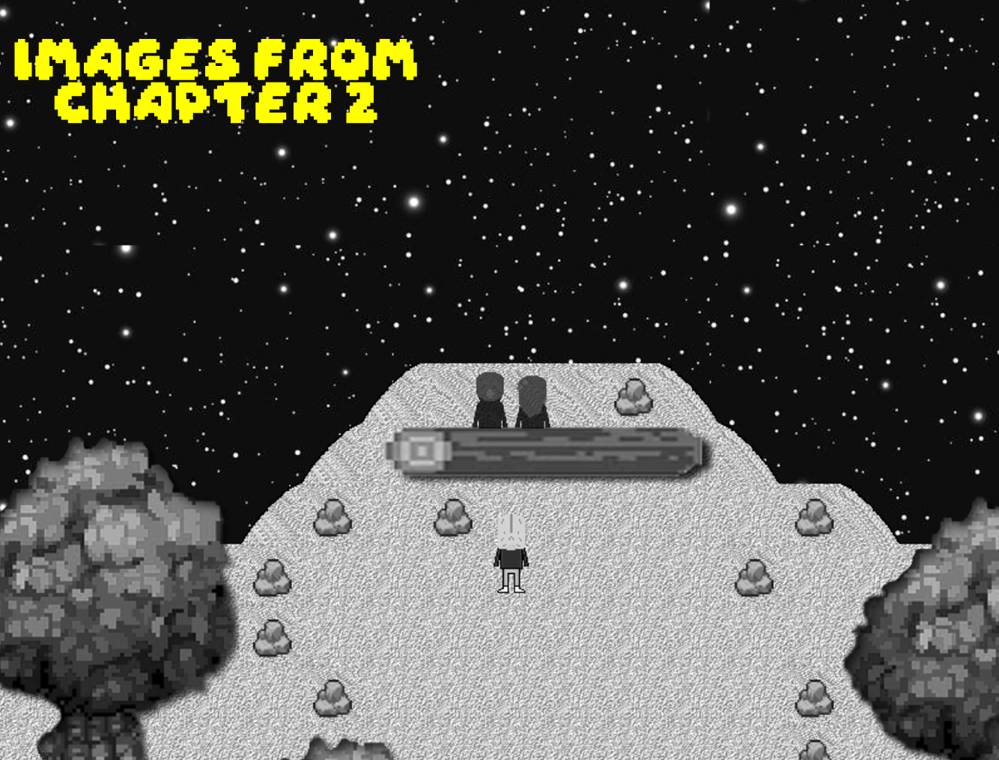
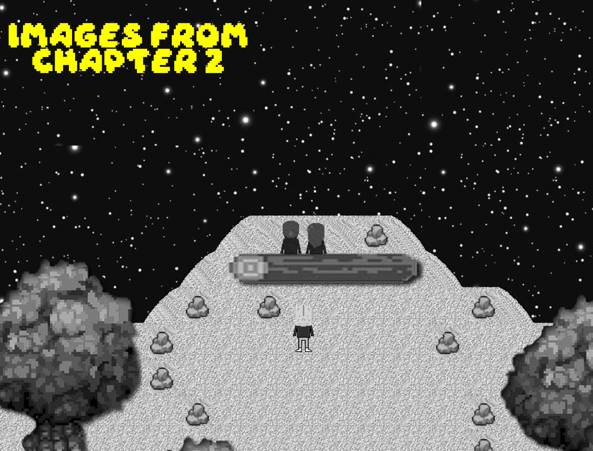

üóì April 18, 2025
After releasing the first demo, we launched a second demo with new mechanics on the Gamejolt platform, which also included Chapter 1. Following that, we continued developing Chapter 2 without slowing down. As we progressed, we realized that some of the graphical improvements in Chapter 2 were much better. As a result, we made several graphical updates to Chapter 1 towards the end of Chapter 2's development. We've reverted the punching mechanic to its original form from the first demo, and there will no longer be any sections where players can punch freely. It will remain in the game as a feature that can only be used when necessary. Additionally, we've improved and made changes to certain sequences in Chapter 1 that we felt needed refinement.You can take a look at the new Chapter 1 and Chapter 2 images.
— lyzerfiction
üì∏ Click to see images


 
